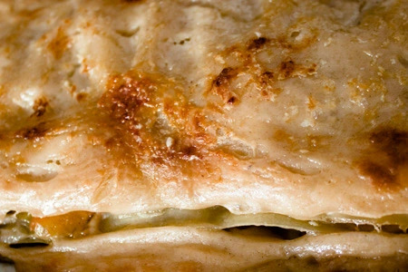

Lasanya Vegetal

Ingredients (2 pers):
- Plaques de lasanya precuinada, 6
- Pastanaga grossa, 1
- Porro, 1
- Ceba, 1
- Xampinyons, 100g
- Oli d'oliva
- Sal
- Pebre negre
- Parmesà ratllat
Per la beixamel:
- Mantega, 40g
- Llet, 1l
- Maizena
- Sal
Preparació:
- Tallem les verdures, no cal que siguin trossos gaire petits.
- Sofregim la ceba i els xampinyons per una banda, i per separat en una altra paella femm el mateix amb la pastanaga i el porro.
- Preparar la beixamel
- Muntem la lasanya posant beixamel sobre cada placa, ja que es tracta de pasta precuinada. Així doncs, començarem amb una placa de lasanya, beixamel, després els xampinyons amb la ceba, una placa, beixamel, la pastanaga amb el porro, la última placa i acabem de posar la beixamel restant.
- Hi ratllem parmesà al gust per sobre.
- Ho coem al forn durant mitja hora a 200ºC, gratinant-ho durant els darrers 5 minuts.